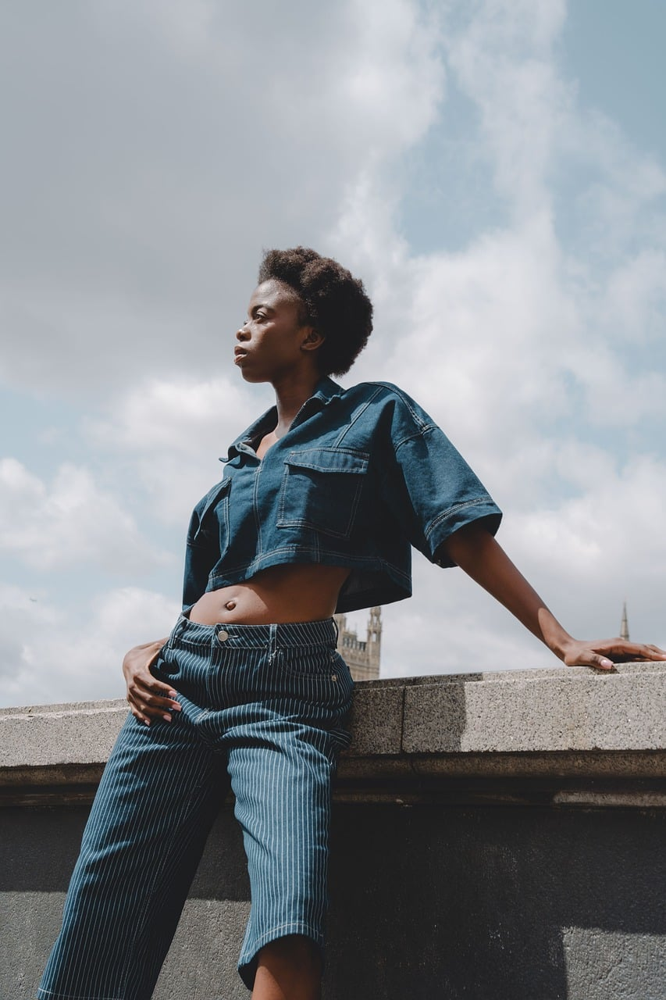

A study in simplicity.
SS 2025 / Vol. 01
Form follows absence. Structure redefined through minimalism.
Raw material. Quiet permanence. Built to outlast the moment.
Silence becomes presence.
We are not defining a look. We are defining a state of mind. An architecture of cloth designed for quiet confidence.

Less noise.
More meaning.
Less urgency.
More presence.
Less consumption.
More connection.